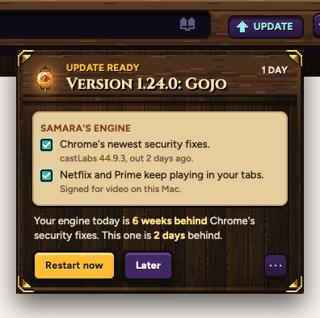
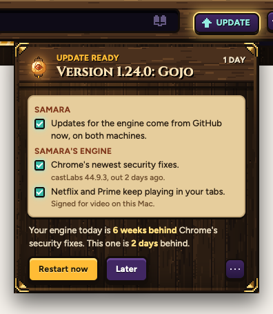
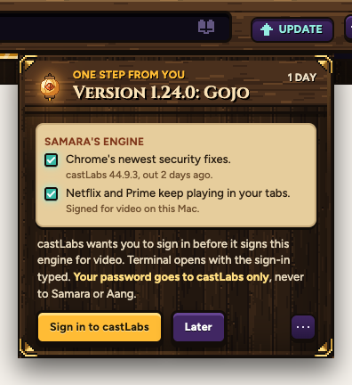
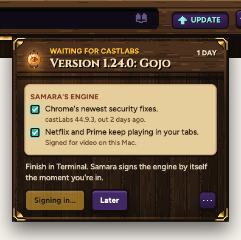

aENGINE ONLYNEW LINES

The two tick boxes for the safety switches are gone: video wins until castLabs says yes.
New engines now come to your UPDATE key on both machines, from GitHub, the same way Samara's own versions do.
Every tray here is the real one from sheet 35, drawn by Samara itself. Only the new words are put in.
The engine's own group, and one line saying how far behind Chrome you are.

The two tick boxes for the safety switches are gone: video wins until castLabs says yes.

One Restart now for both, as today. Overnight still works.
Most of the time castLabs remembers you and nothing shows. When it doesn't:

Click it and Terminal opens with castLabs' sign-in already typed. You type your password there.

When you're in, Samara signs the engine and the key goes back to Restart now.
Not on the key (your pick). When you've been away half an hour, the brain restarts in a few seconds. Afterwards Aang says one line: "I updated myself to 1.24.0 while you were away."